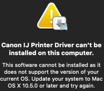
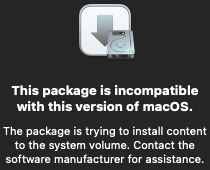

fixing Canon iP4200 driver
The
Canon iP4200 printer driver fails to install on modern macOS, but it can be fixed. This workaround likely applies to other 2005-era models as well.
download
Change the support page's dropdown to successively older OS X versions until a package becomes available.
InstallationCheck
This error is fixed by deleting the PKG's
Contents/Resources/InstallationCheck. The script depends on a 32-bit executable.

read-only sytem volume
This error is caused by the package writing to
/System on Catalina and above.

Surprisingly, the kext is not needed; the files installed to
/Library are enough. Open a root terminal at the PKG's
Contents. Extract, fix, and re-pack the archive.
ditto -x Archive.pax.gz Extracted
rm -r Extracted/System
ditto -c -z Extracted Archive.pax.gz
rm -r Extracted
rm Archive.bom